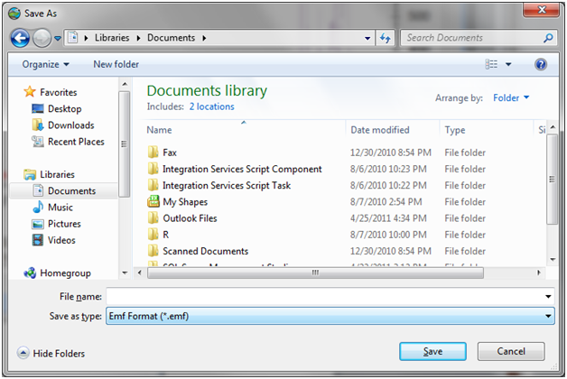
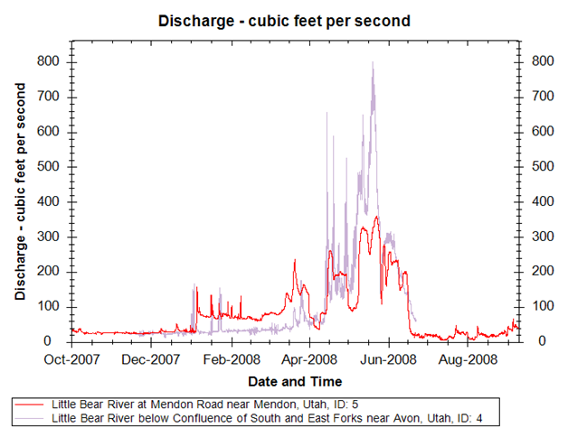

Exporting the Plot Image
Use the following steps to export the plot image that is shown in the Graph View:
- Create a plot that you want to export by selecting a number of data series from the Series Selection Tool and the desired plot type from the Graph View Ribbon.
- To copy the plot image to the clipboard, right click on the plot window and select “Copy” from the context menu. The image can then be pasted into a document or other software program
- To save a copy of the image to disk, right click on the plot window and select “Save Image As.” A file dialog will open asking you where you want to store the image. Select a location to which you want to save the image, select a desired file type, give your image file a name, and then click the “Save” button to save it to disk.

- The image that you export will look something like the following (depending on the data series that you have selected.
